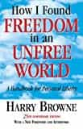

Daryush "Roosh" Valizadeh created ROK in October 2012. You can visit his blog at RooshV.com or follow him on Twitter and Facebook.


This book is an attempt to apply libertarian philosophy as a template for a person’s entire life instead of just for the political realm, with most of its advice concerning personal relationships.
“You have tremendous control over your life, but you give up that control when you try to control others.”
The author tells you to embrace other people’s natures while listening to your own, and to go after your own interests above all others, even that of your family. This book could be retitled “Finding Freedom Through Selfishness,” and it’s pretty close to how I’ve been living my life the past ten years.
Instead of trying to change the broken culture I come from, change American women, or change bosses I didn’t like, I simply constructed a lifestyle from the ground up based on my personality and needs. Instead of protesting and trying to change the world, I changed myself (starting with learning game) and worked around the system to get what I want. This strategy has worked for me.
“You’re in the identity trap when you try to be interested in something because it’s expected of you, or when you try to do the things that others have said you should do, or when you try to live up to an image that others say is the only legitimate, valid image you’re allowed to have.”
The book encourages you not to bother trying to change the world. Work on changing yourself and finding your own happiness. Let other people waste their energy in fruitless endeavors where they must convince thousands or millions of people in order to make small, incremental changes. Fuck the herd and beat to your own drum.
“Improve your own situation without having to go to the trouble of making others agree with your way of thinking.”
Read this book if you want a great motivator to get off your ass and make a big change. All the excuses you probably make to prevent yourself from acting will be addressed in this book, which is like a 4-Hour Workweek from the 1970s that covers all aspects of your life instead of just money.
“There’s always a way [to happiness]—as long as you’re not looking for ways to change others.”

[How I Found Freedom In An Unfree World]
(Originally reviewed at RooshV.com)